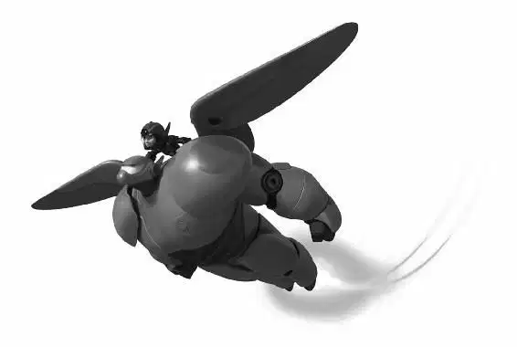

When they arrived, Alistair Krei was addressing his employees at a company-wide meeting outdoors. “This beautiful new campus is the culmination of a lifelong dream,” he told them. “But none of this would have been possible without a few bumps in the road. Those setbacks made us stronger and set us on the path to a bright future.”
Krei was smiling when a voice boomed, “Setbacks?”
It was Yokai. A wave of microbots carried him down the side of a building behind Krei. The crowd panicked and began to run. Krei ran, too, but Yokai swooped him up in a fist of microbots. “Was my daughter just a setback?” he yelled, pushing up the mask for a moment.
“Callaghan!” Krei shouted. “Your daughter ... that was an accident!”
“No!” Callaghan yelled as the microbots tightened around Krei. “You knew it was unsafe! My daughter is gone because of your arrogance!”
He raised his arms and wave upon wave of microbots descended on the Krei Tech campus. They carried in sections of the teleportation portal and quickly assembled it. Columns of microbots held the portal suspended over the campus.
“What are you doing?” Krei asked, terrified, as the portal began to hum.
“You took everything from me when you sent Abigail into that machine,” Professor Callaghan said. “Now I’m going to take everything from you.” Krei knew all too well what happened when there was no exit portal. All of Krei Tech would be sucked into oblivion!
Callaghan smiled. “You’re going to watch everything you’ve built disappear. And then it’s your turn.”
He was about to give the signal to take the portal up to full power when he heard a voice call, “Professor Callaghan!”
The professor froze. Hiro and his friends were standing on the roof of a Krei Tech building. “Let him go!” Hiro yelled. “Is this what Abigail would have wanted?”
“Abigail is gone!” Callaghan shouted, his voice full of anguish.
“This won’t change anything,” Hiro said. “Trust me, I know.”
For a brief moment, Callaghan stopped.
“Listen to the kid, Callaghan!” Krei begged. “Let me go and I’ll give you anything you want!”
Callaghan looked at Krei and became furious again. “I want my daughter back!” he yelled, lowering his mask, and the microbot fist around Krei squeezed even tighter.
“No!” Hiro shouted, watching Krei’s face turn redder and redder.
But Callaghan had heard enough. He activated the portal and sent a wave of microbots to destroy Hiro and the team.
The microbots slammed into them, knocking them off the building’s ledge. Fred bounced onto a nearby roof, while Honey deployed a chem-ball net to catch herself, Go Go, and Wasabi. Baymax immediately swooped in to scoop up Hiro.
Hiro climbed onto Baymax’s back and flew toward Callaghan. “Go for the mask!” he yelled to Baymax, hoping to get control of the neural transmitter.
But before Baymax and Hiro could reach him, Callaghan used the microbots to grab and throw them. Baymax crashed through the wall of a building, while Hiro broke through a window.
Suddenly, the pull of the portal above him ripped off the ceiling, pulling the debris ... and Hiro ... toward it.
